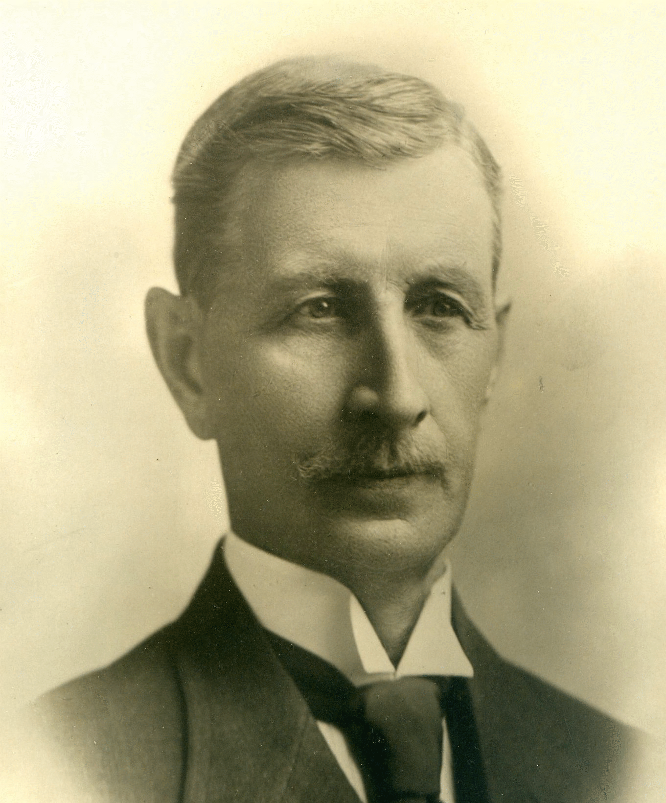

-1-MasterItem.svg)
Stories of Westminster United Church & its People / Page
20
Table
of Contents
someone ‘a Robert.’ The present writer has tried to dig up more distinguishing details about
Robert,
anything that might break up this image of conformity — and the potential monotony of working as
an accountant at the same firm for 50 years, as Robert did. The strangest thing
we’ve discovered,
although our search was less than excavatory, is that Robert was a member of a
group called the
Independent Order Of Odd Fellows (IOF), while his wife Maria Shanks
(
née
Ptolemy, and sister to Westminster co-founder William Ptolemy) was active with
its sister
organization, the International Association of Rebekah Assemblies. A quick visit
to Wikipedia reveals,
however, that, much like Robert, there was likely nothing particularly odd about
the Odd Fellows:
they are another “secretive” fraternal order, like the Freemasons, whose heyday ended at least a
century ago. (IOF’s slogan is, ‘Visit the sick, relieve the distressed, bury the dead and educate the
orphan.’) The fact that Robert’s image does not hang in our church’s back hall alongside the rest
of our founders’ faces, owing perhaps to Robert’s early transfer from our congregation
to Augustine United Church, prevents the visitor of Westminster from even
putting
a face to his wholly common name.
WILLIAM JOHN PTOLEMY, ACCOUNTANT
William was born in the hamlet of Painesville Ontario (part of the township
of West Lincoln) in 1850. Like his brother-in-law Robert, William was a trained
accountant and habitué of esoteric gentlemen fraternities. He was a member
of the Ancient Free & Accepted Masons, the IOF, and the Ancient Order of
United Workmen. But while Robert stayed put at Archibald and Hall for 50 years,
William developed a more eclectic CV, getting his start at the Great Western
Railway, and working later as Deputy Provincial Treasurer, as Municipal
Commissioner for Manitoba, and in other prestigious posts in the civil service.
He was also a member
of the Canadian Club — one of Canada’s early speakers club, which sought to cultivate a sense
of national identity and patriotism — and enjoyed shooting, lawn bowling, and golf. He and
his wife Isabella (née Muir) were married in 1877 and had six children together.

Our Founders